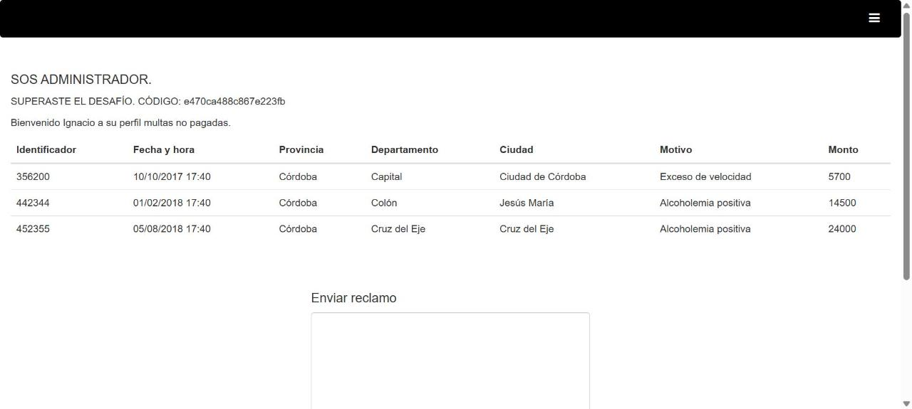

| ID del hallazgo | VULN-0006 |
|---|---|
| Título | Exposición de la SECRET_KEY de Django en endpoint de depuración, habilitando forja de JWT y escalamiento de privilegios |
| Laboratorio / activo | Consulta de multas — "Escalamiento de privilegios" (entorno de práctica autorizado del curso) |
| URL / endpoint | GET https://chl-<id>-consulta-multas.softwareseguro.com.ar/jsonp/?callback=… |
| Severidad | CRÍTICA — CVSS v3.1: 9.1 |
| Clasificación | CWE-200 / CWE-522 / CWE-269 · OWASP A05:2021 Security Misconfiguration (y A02:2021 Cryptographic Failures) |
| Fecha de detección | 2026-11-11 |
| Autor/a | Sofía Lourdes Toledo Criado |
| Estado | Resuelto en laboratorio · remediación recomendada |
| Campo | Valor |
|---|---|
| ID del hallazgo | VULN-0006 |
| Aplicación / activo | Aplicación web "Consulta de multas" (Django + django-rest-framework-jwt, front jQuery/Bootstrap, tras Cloudflare) |
| URL / endpoint | GET /jsonp/?callback=<nombre> (fuga) → GET /perfil/ (uso del privilegio) |
| Fecha de detección | 2026-11-11 |
| Reportado por | Sofía Lourdes Toledo Criado |
| Estado | Resuelto en laboratorio; remediación pendiente del lado del servidor |
| Alcance autorizado | Challenge del curso. Cuenta de prueba provista (ignacio_123@yopmail.com). Sin acceso a datos reales de terceros. |
Hallazgo: la aplicación expone un endpoint de depuración (/jsonp/) que devuelve su configuración interna, incluida la clave secreta criptográfica (SECRET_KEY) con la que se firman los tokens de sesión (JWT). Cualquier persona, incluso sin iniciar sesión, puede leer esa clave y a partir de ella fabricar un token válido de cualquier usuario, incluido el administrador.
Riesgo para el negocio: toma de control total de cuentas (account takeover). Con la clave expuesta, un atacante remoto no autenticado se convierte en administrador y puede operar funciones privilegiadas (en este laboratorio, "pagar" multas ajenas); en un sistema real equivale al compromiso de todo el mecanismo de autenticación.
Impacto principal sobre la tríada CIA: Confidencialidad e Integridad (altas). La disponibilidad no se vio afectada en las pruebas.
Severidad y prioridad: Crítica (CVSS v3.1 9.1). Prioridad máxima: explotable de forma remota, sin privilegios previos, sin interacción del usuario y con impacto total sobre la autenticación.
Acción recomendada: eliminar/deshabilitar de inmediato el endpoint que expone la configuración, rotar la SECRET_KEY (invalidando todos los tokens emitidos) y cargarla desde variables de entorno, nunca en código ni accesible por HTTP.
La página /perfil/ incluye un <script src="/jsonp/?callback=procesarDatos"> para cargar datos de configuración vía JSONP. Ese endpoint refleja el parámetro callback y responde con un objeto JSON que contiene parámetros sensibles del settings de Django, entre ellos SECRET_KEY, MODO_DESARROLLO, TIME_ZONE, etc. El endpoint no exige autenticación (responde 200 sin cookie de sesión, mientras que /perfil/ responde 403).
La aplicación autentica mediante un JWT HS256 almacenado en la cookie auth (HttpOnly). La firma del JWT se realiza con la SECRET_KEY de Django. Al quedar esa clave expuesta, se puede recalcular la firma HMAC-SHA256 de un token arbitrario. Se verificó que la clave filtrada reproduce exactamente la firma del token legítimo de la cuenta de prueba, confirmando que es la clave de firma real.
El control de rol del lado servidor se basa en el campo email contenido en el JWT. Forjando un token con email = administrador_multas@yopmail.com y firmándolo con la clave filtrada, el servidor reconoce al solicitante como administrador y revela el mensaje de éxito del desafío.
django-rest-framework-jwt (JWT HS256; payload con user_id, email, exp, orig_iat).GET /jsonp/?callback=<nombre>.callback (reflejado); cookie auth (JWT) en el uso del privilegio.123456@pz*…).SECRET_KEY débil y embebida.Demostrado: un atacante remoto no autenticado obtiene la SECRET_KEY y forja un JWT válido de administrador, logrando escalamiento de privilegios y acceso a la función administrativa del challenge (mensaje "SOS ADMINISTRADOR" y código ganador).
Alcance potencial (no todo demostrado): en Django la SECRET_KEY firma además sesiones, cookies firmadas y tokens de restablecimiento de contraseña; su exposición implica el compromiso del mecanismo de autenticación completo y la suplantación de cualquier usuario. Por eso el impacto en Confidencialidad e Integridad es alto. No se probó impacto en Disponibilidad.
Versión utilizada: CVSS v3.1.
| Métrica | Valor / justificación |
|---|---|
| Vector CVSS completo | CVSS:3.1/AV:N/AC:L/PR:N/UI:N/S:U/C:H/I:H/A:N |
| Puntaje base | 9.1 |
| Severidad CVSS | Crítica |
| Métricas relevantes | AV:N (explotable por Internet); AC:L (una sola petición GET); PR:N (la fuga no requiere sesión); UI:N (sin interacción de víctima); S:U (mismo ámbito de autorización); C:H e I:H (toma de control total de cuentas); A:N (sin impacto de disponibilidad demostrado). |
| Calculadora / fuente | https://www.first.org/cvss/calculator/3.1 |
| Prioridad interna | Crítica / inmediata — secreto de firma expuesto públicamente. |
Justificación: se puntúa sobre el impacto demostrado (suplantación de cualquier cuenta → C:H/I:H) manteniendo A:N por no haberse probado afectación de disponibilidad. Nota: si se considera que el control administrativo obtenido permite destruir registros o interrumpir el servicio, correspondería A:H, elevando el puntaje a 9.8 con el vector …/C:H/I:H/A:H.
Objetivo de la prueba: demostrar que, con la clave filtrada por /jsonp/, se forja un JWT de administrador y se accede a la función privilegiada.
Precondiciones: entorno de laboratorio autorizado; cuenta de prueba ignacio_123@yopmail.com (solo como línea de base; la fuga no la requiere).
Herramientas: navegador + consola de desarrollador (Web Crypto API para el HMAC-SHA256).
/perfil/ carga /jsonp/?callback=procesarDatos.GET /jsonp/?callback=x sin cookie de sesión. Responde 200 con la configuración, incluida SECRET_KEY.email a administrador_multas@yopmail.com (pista del enunciado).HMAC-SHA256(header.payload, SECRET_KEY) y se arma el JWT. Se verifica primero que la clave reproduce la firma del token legítimo de Ignacio (control de validez).auth y se solicita GET /perfil/.Solicitud de la fuga (sanitizada):
GET /jsonp/?callback=x HTTP/1.1 Host: chl-<id>-consulta-multas.softwareseguro.com.ar (Sin cookie de sesión)
Respuesta relevante (secreto parcialmente ofuscado):
HTTP/1.1 200 OK
Content-Type: text/javascript
x({"MODO_DESARROLLO": false, "LANGUAGE_CODE": "en-us", "TIME_ZONE": "UTC",
"USE_I18N": true, "USE_L10N": true, "USE_TZ": true,
"SECRET_KEY": "123456@pz*+2p********"})
Forja y verificación del JWT (extracto del PoC en consola):
// 1) obtener la clave de la fuga
S = fetch('/jsonp/?callback=x').then(...).match(/"SECRET_KEY":\s*"([^"]+)"/)[1]
// 2) firmar con HMAC-SHA256 (Web Crypto)
// control: firma recalculada del token de Ignacio == firma real -> true
// 3) payload forjado: email = administrador_multas@yopmail.com
// 4) token = header.payload.firma (HS256, válido)
document.cookie = 'auth=' + tokenForjado + '; path=/'; // reemplaza la sesión
location.href = '/perfil/';

auth, /perfil/ muestra "SOS ADMINISTRADOR. SUPERASTE EL DESAFÍO" con el código ganador (instancia de laboratorio). El saludo conserva el nombre de Ignacio porque el nombre se resuelve por user_id, pero el rol se decide por el email del token forjado./jsonp/ (o cualquier vista que serialice el settings). Nunca exponer configuración por HTTP.SECRET_KEY de inmediato (invalida todos los JWT/sesiones emitidos) y generar una clave larga y aleatoria.email); usar un claim de rol validado contra el servidor o la base de datos.exp) y registrar/alertar accesos administrativos anómalos, sin exponer datos sensibles.GET /jsonp/ ya no devuelve configuración ni secretos (404/deshabilitado).SECRET_KEY fue rotada y se carga desde el entorno.Responsable sugerido: equipo de desarrollo backend / plataforma.
Fecha objetivo: inmediata (riesgo crítico).
| Fecha | Responsable | Acción | Resultado |
|---|---|---|---|
| 2026-11-11 | Sofía Lourdes Toledo Criado | Explotación y verificación en laboratorio | Confirmado (escalamiento a administrador) |
| [AAAA-MM-DD] | [Equipo backend] | Retest tras remediación | Pendiente |
Estado final: Abierto (remediación pendiente del lado del servidor).
Observaciones: hallazgo resuelto como challenge; el reporte documenta causa raíz y remediación para un escenario real equivalente.